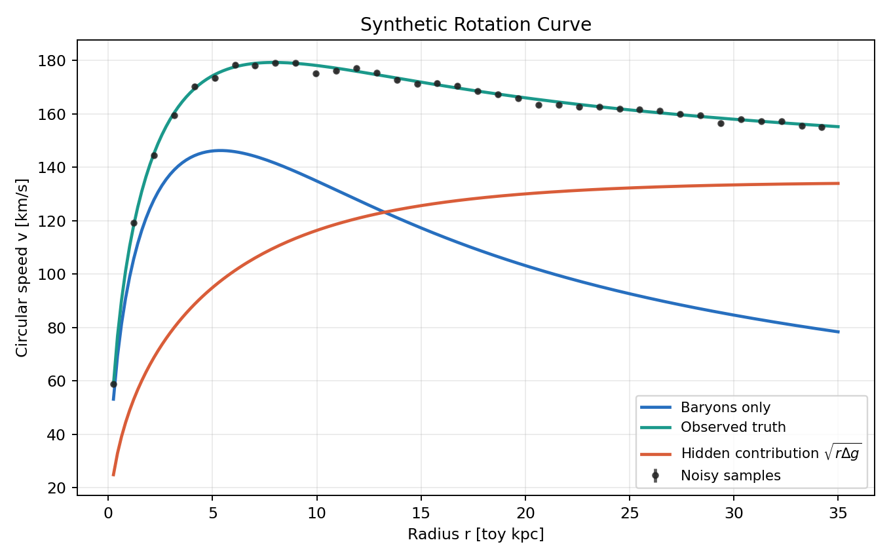
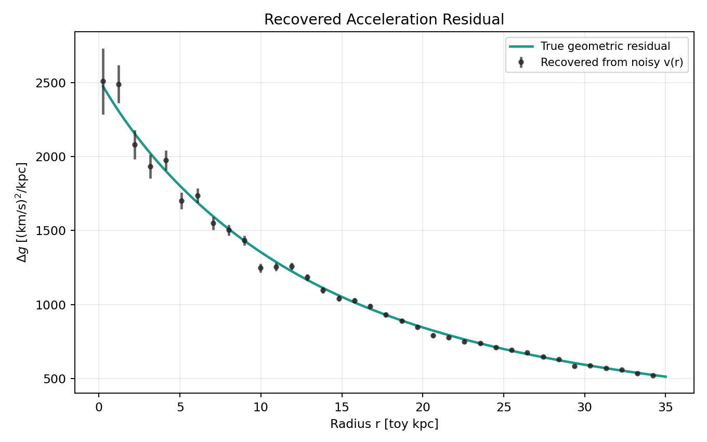
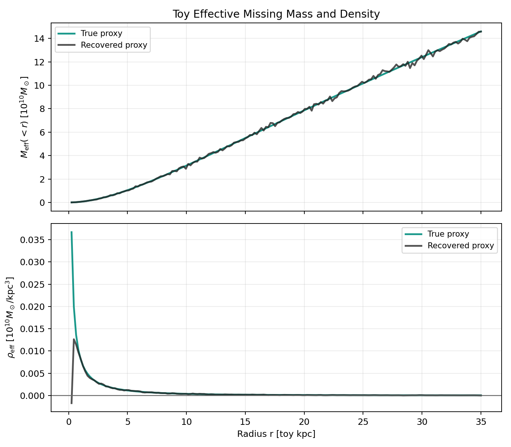
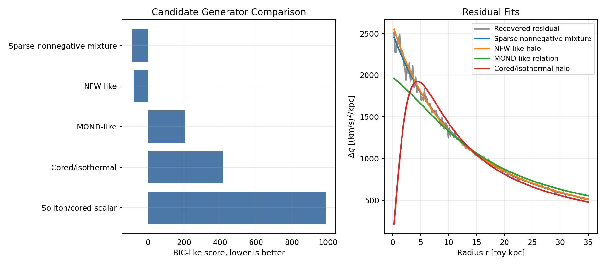
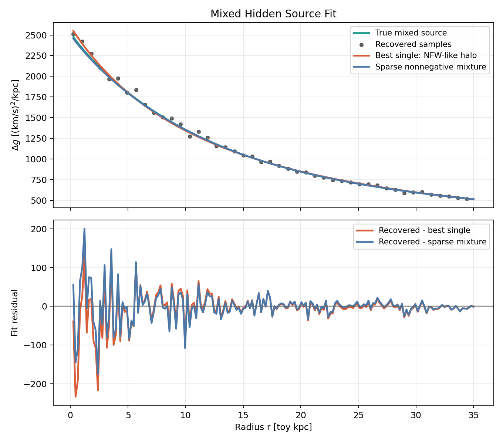
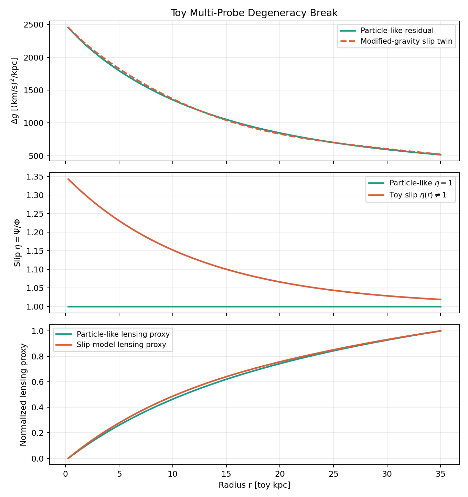
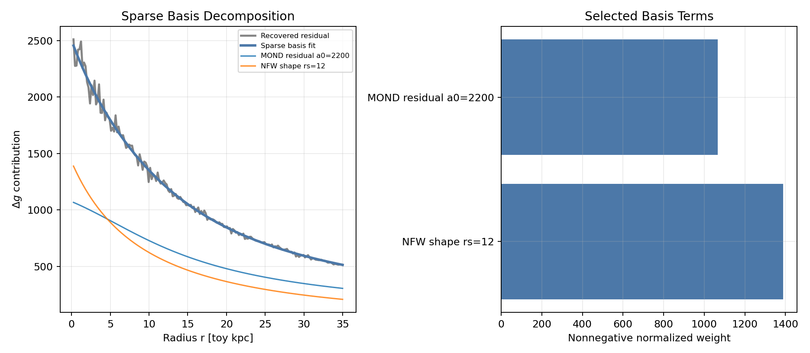

AI Search over Geometric Residuals in the Missing-Mass Problem
Abstract
This standalone note turns the geometric-residual framing of the missing-mass problem into a small reproducible computational prototype. It generates toy rotation curves, recovers the weak-field geometric residual, compares candidate latent physical generators, and demonstrates why multi-probe constraints matter. It is explicitly a toy framework, not a solution to dark matter.
Conceptual Starting Point
The central object is the difference between the geometry implied by observations and the geometry predicted by visible matter:
\[ \Delta G_{\mu\nu} = G_{\mu\nu}[g^{\rm obs}] - G_{\mu\nu}[g^{\rm bar}]. \]If Einstein's equation is retained, the same geometric residual can be represented as an effective missing stress-energy tensor:
\[ T_{\mu\nu}^{\rm miss} = \frac{c^4}{8\pi G}\Delta G_{\mu\nu}. \]This effective object may correspond to particle-like dark matter, field-like sources, modified geometry laws, baryonic errors, environmental effects, systematics, or mixtures of these.
Weak-Field Galaxy Reduction
For toy rotation curves, the practical residual is
\[ \Delta g(r) = g_{\rm obs}(r)-g_{\rm bar}(r) = \frac{v_{\rm obs}^2(r)-v_{\rm bar}^2(r)}{r}. \]The potential residual defines the effective density proxy
\[ \rho_{\rm eff}(r)= \frac{1}{4\pi G}\nabla^2\Delta\Phi. \]Under a spherical proxy,
\[ M_{\rm eff}(AI-Assisted Inverse Problem
The prototype frames the residual as a latent-generator decomposition:
\[ \Delta G_{\mu\nu}^{\rm obs} \approx \sum_k \Delta G_{\mu\nu}^{(k)}. \]In the toy radial setting, the search is
\[ \Delta g(r) \approx \sum_k w_k f_k(r,g_{\rm bar},\rho_{\rm bar},\nabla\rho_{\rm bar},\ldots). \]A future covariant search could instead target structures like
\[ \Delta \mathcal{E}_{\mu\nu} = F_{\mu\nu} \left( g_{\mu\nu},R_{\mu\nu},R,T_{\mu\nu}^{\rm bar}, \nabla_\alpha T_{\mu\nu}^{\rm bar},\phi,A_\mu,\ldots \right). \]Experimental Design
The synthetic baryonic mass profile is
\[ M_{\rm bar}(Results
Residual Recovery



The broad geometric residual is recovered in all toy cases. Density recovery is noisier because it differentiates the inferred cumulative effective mass.
| component | relative_rmse_delta_g | corr_delta_g | delta_g_positive_fraction | mass_monotonic_fraction | rho_nonnegative_fraction |
|---|---|---|---|---|---|
| nfw_like | 0.0332 | 0.9979 | 1.0000 | 0.7207 | 0.9944 |
| cored_isothermal | 0.0494 | 0.9937 | 0.9944 | 0.7430 | 0.9833 |
| mond_like | 0.0903 | 0.9601 | 1.0000 | 0.7374 | 0.9889 |
| soliton_cored | 0.0150 | 0.9999 | 1.0000 | 0.5587 | 0.5667 |
| mixed_nfw_mond | 0.0329 | 0.9971 | 1.0000 | 0.7765 | 1.0000 |
Candidate Generator Degeneracy

The best overall BIC-like fit is Sparse nonnegative mixture. The best single-family fit is NFW-like halo. The mixed example illustrates another inverse problem: the missing residual can be a superposition of latent mechanisms.
| model | weighted_mse | bic | complexity | params | delta_g_positive_fraction | mass_monotonic_fraction | rho_nonnegative_fraction | pathological_oscillations |
|---|---|---|---|---|---|---|---|---|
| Sparse nonnegative mixture | 0.5749 | -89.2464 | 2 | {"terms": "MOND residual a0=2200; NFW shape rs=12"} | 1.0000 | 1.0000 | 1.0000 | False |
| NFW-like halo | 0.6110 | -78.2834 | 2 | {"mass_scale": 30.786280969902787, "r_s": 15.95042285852726} | 1.0000 | 1.0000 | 1.0000 | False |
| MOND-like relation | 3.0655 | 206.8314 | 1 | {"a0": 2301.6491294046045} | 1.0000 | 1.0000 | 1.0000 | False |
| Cored/isothermal halo | 9.5635 | 416.8183 | 2 | {"v0": 130.6443428001366, "r_c": 4.435806645184747} | 1.0000 | 1.0000 | 0.9944 | False |
| Soliton/cored scalar | 229.1534 | 988.5764 | 2 | {"rho0": 0.006669625465676975, "r_c": 11.99999999999947} | 1.0000 | 1.0000 | 0.9944 | False |

Multi-Probe Toy Constraint

Two nearly identical rotation residuals are assigned different gravitational slip behavior. The resulting lensing proxies differ, demonstrating the conceptual value of multi-probe constraints. This is not a physical lensing calculation.
Sparse Basis Search

| basis | normalized_weight | contribution_rms |
|---|---|---|
| MOND residual a0=2200 | 1.0666e+03 | 629.8913 |
| NFW shape rs=12 | 1.3880e+03 | 595.6919 |
Most Promising Directions
- Use real rotation-curve data, for example SPARC-like data.
- Replace the spherical proxy with disk geometry.
- Jointly fit rotation and lensing observables.
- Learn residual representations across galaxy populations.
- Search over physically constrained Lagrangians and field equations.
- Enforce conservation, \(\nabla^\mu T_{\mu\nu}^{\rm eff}=0\).
- Add priors for positivity, stability, monotonicity, and cosmological consistency.
- Use symbolic regression, differentiable programming, and neural operators to propose residual field structures.
Limitations
The prototype uses toy units, synthetic data, and a spherical approximation. It fits no real galaxy data, performs no true GR metric reconstruction, and does not discover particles. The lensing proxy is conceptual, not physical lensing. The sparse basis search is only a scaffold. The inverse problem remains degenerate.
Conclusion
The missing-mass problem can be studied as an inverse problem over geometric residuals: infer the simplest physically valid generator, or mixture of generators, whose induced curvature residual matches observations across probes.
References
- Rubin, V. C., Ford, W. K., Jr., and Thonnard, N. (1980). Extended rotation curves of spiral galaxies.
- Lelli, F., McGaugh, S. S., and Schombert, J. M. (2016). SPARC database and disk-galaxy mass models.
- McGaugh, S. S., Lelli, F., and Schombert, J. M. (2016). Radial acceleration relation.
- Bertone, G., and Hooper, D. (2018). History and status of dark matter.
- Mistele, T., McGaugh, S., Lelli, F., Schombert, J., and Li, P. (2024). Weak-lensing constraints related to extended flat circular velocities.